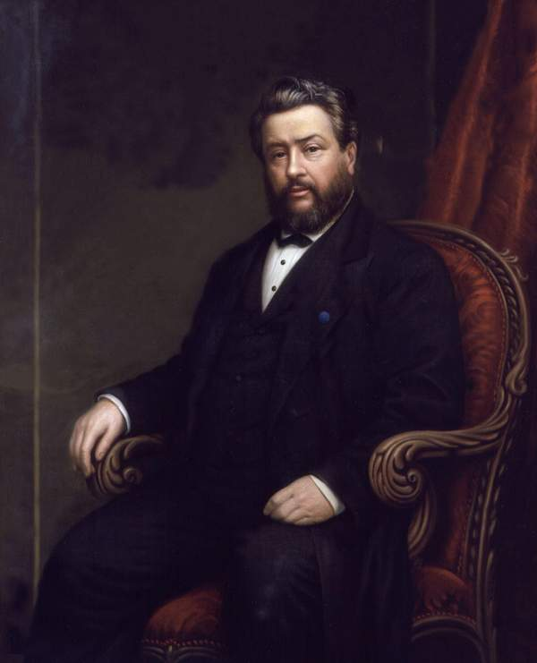

Charles Spurgeon
The Prince of Preachers

Portrait of Spurgeon by Alexander Melville (1885)
Charles Spurgeon (1834-1892) was a Particular Baptist preacher, known for authoring and delivering powerful sermons which continue to touch lives to this very day.
Years before he died, he had preached, 'When you see my coffin carried to the silent grave, I should like every one of you, whether converted or not, to be constrained to say, “He did earnestly urge us, in plain and simple language, not to put off the consideration of eternal things. He did entreat us to look to Christ.”'